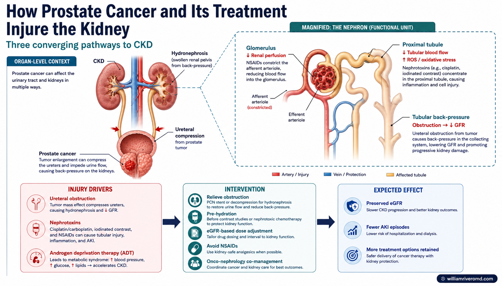
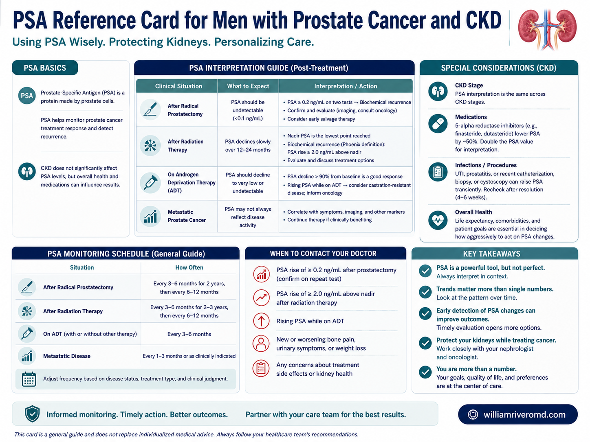
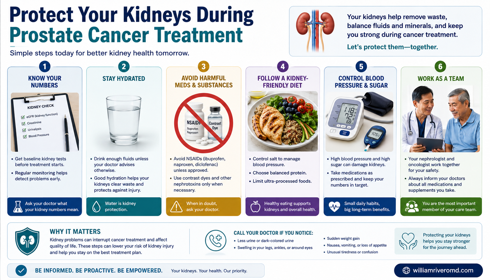
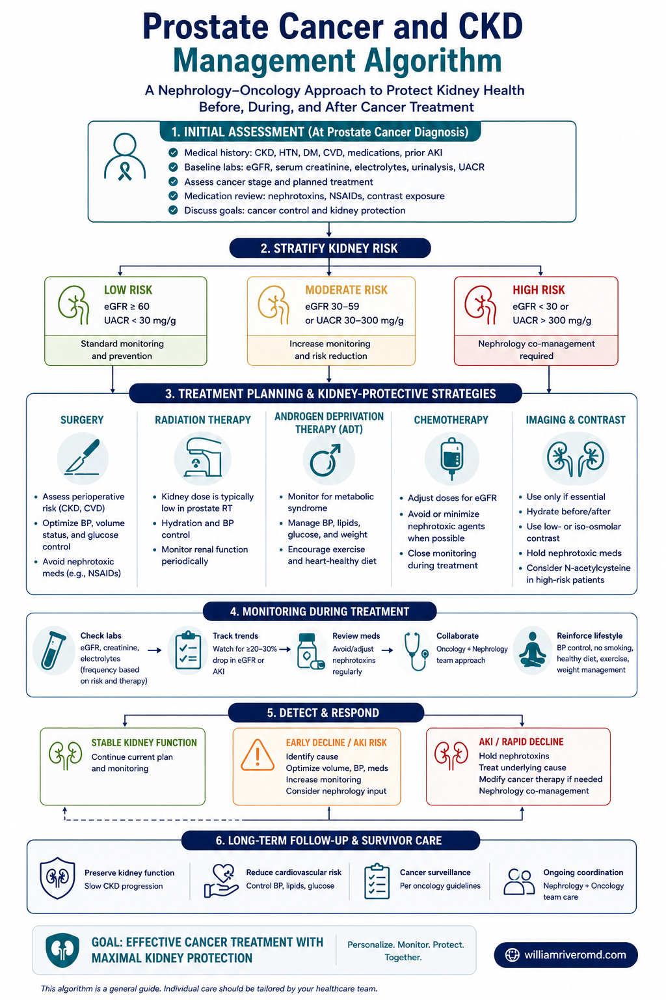

What is the Connection Between Prostate Cancer and CKD? Ano ang Kaugnayan ng Cancer sa Prostate at CKD? Unsa ang Koneksyon tali sa Cancer sa Prostate ug CKD? Nanu ing Kaugnayan ning Cancer ning Prostate at CKD?
Prostate cancer is the most common cancer in Filipino men. Chronic kidney disease (CKD) and prostate cancer often occur together because they share the same risk factors — aging, diabetes, and high blood pressure. Cancer treatments can harm your kidneys, and CKD can change which treatments are safe for you. Ang cancer sa prostate ang pinakakaraniwang cancer sa mga lalaking Pilipino. Ang chronic kidney disease (CKD) at cancer sa prostate ay madalas na magkasabay dahil pareho silang may risk factors — pagtanda, diabetes, at mataas na blood pressure. Ang mga paggamot sa cancer ay maaaring makasama sa iyong mga bato, at ang CKD ay maaaring magbago ng kung aling mga paggamot ang ligtas para sa iyo. Ang cancer sa prostate mao ang labing komon nga cancer sa mga lalaking Pilipino. Ang chronic kidney disease (CKD) ug cancer sa prostate kasagaran magkauban tungod kay managsama ang ilang risk factors — pagtigulang, diabetes, ug taas nga presyon sa dugo. Ang mga pagtambal sa cancer mahimong makadaot sa imong mga kidney, ug ang CKD mahimong magbag-o sa kung unsang mga pagtambal ang luwas para kanimo. Ing cancer ning prostate ing pinaka-komon a cancer keng mga lalaking Pilipino. Ing chronic kidney disease (CKD) at cancer ning prostate masabing magkaugnay tungku nung pareho lang ang kanilang risk factors — pagtanda, diabetes, at matas a presyon ning dugo. Ing mga lunas keng cancer malyari yang makapaminsala keng ding kidney mu, at ing CKD malyari yang magbago king kung nanu ing mga lunas ing luwas para keka.
Direct Tumor Effects on Kidneys Direktang Epekto ng Tumor sa mga Bato Direktang Epekto sa Tumor sa mga Kidney Direktang Epekto ning Tumor keng Kidney
When prostate cancer grows and spreads locally, it can press on the tubes (ureters) that carry urine from your kidneys to your bladder. This blockage is called ureteral obstruction — it causes the kidney to swell (hydronephrosis) and can permanently damage kidney tissue if not treated promptly. Kapag lumaki at kumalat ang cancer sa prostate nang lokal, maaari itong pumindot sa mga tubo (ureters) na nagdadala ng ihi mula sa iyong mga bato patungong pantog. Ang pagbara na ito ay tinatawag na ureteral obstruction — nagdudulot ito ng pamamaga ng bato (hydronephrosis) at maaaring permanenteng masira ang tissue ng bato kung hindi agad ginagamot. Kung ang cancer sa prostate motubo ug mokaylap sa lokal, mahimong mopugong kini sa mga tubo (ureters) nga nagdala sa ihi gikan sa imong mga kidney ngadto sa pantog. Kining pagbabara gitawag ug ureteral obstruction — kini naghimo sa kidney nga mobubo (hydronephrosis) ug mahimong permanenteng makadaot sa tissue sa kidney kung dili dayon matambal. Kung ing cancer ning prostate lumaki at kumalat a lokal, malyari yang manakit king ding tubo (ureters) a nagdadala ning ihi galing keng ding kidney papunta king pantog. Ing pagbara naman iyan tinatawag a ureteral obstruction — kaya nitong magpabukal king kidney (hydronephrosis) at malyaring permanenteng masira ing tissue ning kidney king buri agad lagnat.
Treatment-Related Kidney Damage Pinsala sa Bato Dulot ng Paggamot Kadaot sa Kidney Tungod sa Pagtambal Kapaminsala keng Kidney Tungku ning Lunas
Chemotherapy, hormone therapy (ADT), targeted cancer drugs, and radiation can all damage your kidneys. Some drugs are filtered by the kidneys and can accumulate to harmful levels if kidney function is already reduced. Knowing your kidney function before and during treatment is essential to prevent serious harm. Ang chemotherapy, hormone therapy (ADT), mga targeted na gamot sa cancer, at radiation ay maaaring magpinsala sa iyong mga bato. Ang ilang mga gamot ay na-filter ng mga bato at maaaring mag-ipon sa mapanganib na antas kung ang function ng bato ay nabawasan na. Ang pag-alam ng iyong kidney function bago at sa panahon ng paggamot ay mahalaga upang maiwasan ang seryosong pinsala. Ang chemotherapy, hormone therapy (ADT), mga targeted nga tambal sa cancer, ug radiation tanan makadaot sa imong mga kidney. Ang pipila ka tambal gi-filter sa mga kidney ug mahimong mag-ipon sa makadaot nga lebel kung ang function sa kidney nabawasan na. Ang paghibalo sa imong kidney function sa wala pa ug sa panahon sa pagtambal importante aron mapigilan ang seryosong kadaot. Ing chemotherapy, hormone therapy (ADT), mga targeted a gamit keng cancer, at radiation tanan malyaring makapaminsala keng ding kidney mu. Ing deng gamit na-filter ning mga kidney at malyaring magipon keng makasama a antas kung ing function ning kidney nabawasan na. Ing pag-alam king function ning kidney mu bago at keng panahon ning lunas mapanibatan para mapigilan ing seryosong pinsala.

How prostate cancer and its treatments converge on the kidney — tumor pressure on the ureters, nephrotoxic drugs and contrast, and ADT-driven metabolic strain. Kung paano nagtatagpo sa bato ang cancer sa prostate at ang mga gamot nito — presyon ng tumor sa ureters, nephrotoxic na gamot at contrast, at metabolic strain mula sa ADT. Giunsa pagtagbo sa kidney ang cancer sa prostate ug ang mga tambal niini — presyon sa tumor sa ureters, nephrotoxic nga tambal ug contrast, ug metabolic strain gikan sa ADT. Nung panu makatagpu king kidney ing cancer ning prostate at ding lunas na — presyon ning tumor king ureters, nephrotoxic a gamut at contrast, at metabolic strain ibat king ADT.
Epidemiology & Risk Factors
Prostate cancer is the third most common cancer in the Philippines. The intersection of CKD and prostate cancer is driven by three major mechanisms: (1) shared cardiometabolic risk factors — aging, hypertension, diabetes, and obesity predispose to both conditions; (2) ADT-related metabolic complications — chronic androgen deprivation induces dyslipidemia, insulin resistance, and hypertension, all of which accelerate CKD progression; and (3) direct tumor compression of the urinary tract — pelvic lymphadenopathy and local invasion can cause ureteral obstruction and obstructive nephropathy. Filipino men tend to present at more advanced stages, increasing both the likelihood of ureteral involvement and the need for systemic nephrotoxic therapies.
| Risk Factor | Mechanism | CKD Interaction |
|---|---|---|
| Age > 65 | Prostate cell senescence; androgen receptor amplification | Accelerated nephron loss; reduced renal reserve |
| Hypertension | Shared vascular endothelial damage | ADT worsens BP control; RAAS activation |
| Diabetes mellitus | IGF-1 pathway upregulation; VEGF-mediated angiogenesis | Nephrotoxicity amplified; diabetic nephropathy progression |
| Obesity | Adipokine-androgen axis; aromatase upregulation | CKD progression amplified; reduced drug clearance |
| Family history | BRCA2, HOXB13, ATM gene variants | Nephrotoxic treatment risk unchanged; germline testing indicated |
How CKD Affects PSA Testing Paano Nakakaapekto ang CKD sa PSA Testing Giunsa nga Nakaapekto ang CKD sa PSA Testing Panung Nakakaapekto ing CKD keng PSA Testing
PSA (Prostate-Specific Antigen) is the main blood test used to screen for prostate cancer. However, your kidneys help clear PSA from your blood. When kidney function is reduced, PSA can build up in the blood and appear falsely high — even when there is no cancer or the cancer is not growing. A low eGFR (below 30) can raise PSA levels by 30–50% for reasons unrelated to prostate disease. Ang PSA (Prostate-Specific Antigen) ang pangunahing blood test na ginagamit para sa screening ng prostate cancer. Gayunpaman, ang iyong mga bato ay tumutulong sa pag-alis ng PSA mula sa iyong dugo. Kapag nabawasan ang kidney function, ang PSA ay maaaring mag-ipon sa dugo at lumabas na mataas nang mali — kahit walang cancer o hindi lumalaki ang cancer. Ang mababang eGFR (mas mababa sa 30) ay maaaring magpataas ng PSA ng 30–50% dahil sa mga dahilang hindi nauugnay sa sakit ng prostate. Ang PSA (Prostate-Specific Antigen) mao ang nag-unang blood test nga gigamit alang sa screening sa cancer sa prostate. Apan, ang imong mga kidney motabang sa pag-alis sa PSA gikan sa imong dugo. Kung ang kidney function mababaan, ang PSA mahimong mag-ipon sa dugo ug mogawas nga daw taas bisan walay cancer o dili motubo ang cancer. Ang ubos nga eGFR (ubos sa 30) mahimong mopaibabaw sa PSA og 30–50% tungod sa mga rason nga wala'y kalabotan sa sakit sa prostate. Ing PSA (Prostate-Specific Antigen) ing pangunahing blood test a ginagamit para sa screening ning cancer ning prostate. Datapwa, ing ding kidney mu tumutulong keng pag-alis ning PSA galing keng dugo mu. Kung nabawasan ing kidney function, ing PSA malyaring mag-ipon keng dugo at lumabas a matas a mali — kahit ala cancer o aliwa man lumalaki ing cancer. Ing mababa a eGFR (mas mababa king 30) malyaring magpataas ning PSA king 30–50% tungku ning mga dahilang aliwa kaugnayan keng sakit ning prostate.
| PSA Range Antas ng PSA Antas sa PSA Antas ning PSA | CKD Consideration Pagsasaalang-alang sa CKD Pagsaalang-alang sa CKD Pagsaalang-alang keng CKD | Recommended Action Inirerekomendang Hakbang Girekomendang Aksyon Inirerekomendang Gawa |
|---|---|---|
| < 4 ng/mL < 4 ng/mL < 4 ng/mL < 4 ng/mL | May still have prostate cancer in advanced CKD Maaari pa ring may cancer sa prostate kahit sa advanced CKD Mahimong adunay cancer sa prostate bisan sa advanced CKD Malyari pang me cancer sa prostate kahit sa advanced CKD | Annual DRE; free PSA if borderline Taunang DRE; free PSA kung borderline Tinuig nga DRE; free PSA kung borderline Taunan a DRE; free PSA kung borderline |
| 4–10 ng/mL ("gray zone") 4–10 ng/mL ("gray zone") 4–10 ng/mL ("gray zone") 4–10 ng/mL ("gray zone") | CKD can falsely elevate into this range Ang CKD ay maaaring mag-angat nang mali sa range na ito Ang CKD mahimong sayop nga moibabaw ngadto niini nga range Ing CKD malyaring mangwa a matas keng range niti | Free/total PSA ratio + MRI prostate Free/total PSA ratio + MRI ng prostate Free/total PSA ratio + MRI sa prostate Free/total PSA ratio + MRI ning prostate |
| > 10 ng/mL > 10 ng/mL > 10 ng/mL > 10 ng/mL | More likely significant; CKD less likely sole cause Mas malamang na mahalaga; CKD ay hindi malamang nag-iisang dahilan Mas posible nga importante; ang CKD dili malamang ang nag-inusara nga hinungdan Mas malamang importante; ang CKD aliwa malamang ang nag-iisang dahilan | Urgent urology referral; biopsy discussion Agarang referral sa urology; talakayan ng biopsy Agarang referral sa urology; diskusyon sa biopsy Agarang referral keng urology; talakayan ning biopsy |
| Rising PSA trend Tumataas na PSA trend Motaas nga PSA trend Tumataas a PSA trend | More meaningful than single value in CKD Mas makabuluhan kaysa sa isang halaga sa CKD Mas mahinungdanon kaysa sa usa ka kantidad sa CKD Mas makabuluhan kaysa sa metung a kantidad keng CKD | Track PSA velocity; repeat in 3–6 months Subaybayan ang PSA velocity; ulitin sa 3–6 buwan Sunda ang PSA velocity; liwaton sa 3–6 buwan Subaybayan ing PSA velocity; ulitin keng 3–6 bulan |

Interpreting PSA in CKD: each PSA scenario mapped to its kidney-disease consideration and the recommended next step. Pag-unawa sa PSA sa CKD: bawat sitwasyon ng PSA na nakaugnay sa konsiderasyon sa sakit sa bato at ang inirerekomendang susunod na hakbang. Pagsabot sa PSA sa CKD: matag senaryo sa PSA gimapa sa konsiderasyon sa sakit sa kidney ug ang girekomendang sunod nga lakang. Pamiintindi king PSA king CKD: balang senaryo ning PSA mimapa king konsiderasyon king sakit king kidney at ing inirerekomendang susunod a dapat.
PSA Interpretation in CKD
PSA is produced by prostate epithelium and circulates in serum bound to alpha-1-antichymotrypsin (complexed PSA) and in free form. Renal clearance accounts for a meaningful fraction of PSA elimination. In CKD with eGFR < 45 mL/min/1.73m², PSA half-life extends and serum levels rise independent of prostate pathology. The degree of PSA elevation correlates with CKD severity. This creates diagnostic ambiguity particularly in the 4–10 ng/mL "gray zone," where prostate cancer prevalence is 25–35% in general populations but PSA specificity is significantly reduced in CKD.
| eGFR Range (mL/min/1.73m²) | Expected PSA Adjustment | Clinical Implication |
|---|---|---|
| > 60 | Negligible effect | Standard PSA thresholds apply (AUA/EAU guidelines) |
| 45–59 | ~10–15% elevation above true value | Slight threshold adjustment warranted; watch PSA trend |
| 30–44 | ~20–30% elevation | Free/total PSA ratio more informative; MRI prostate if borderline |
| 15–29 | ~35–50% elevation | MRI-guided biopsy preferred; PSA density (PSAD) calculation adds value |
| < 15 / dialysis | Highly variable; paradoxically low in anephric patients | PSA unreliable as sole screening tool; DRE + mpMRI essential |
Treatment Risks for Your Kidneys Mga Panganib ng Paggamot sa Iyong mga Bato Mga Risgo sa Pagtambal para sa Imong mga Kidney Mga Panganib ning Lunas keng Ding Kidney Mu
Androgen Deprivation Therapy (ADT) Androgen Deprivation Therapy (ADT) Androgen Deprivation Therapy (ADT) Androgen Deprivation Therapy (ADT)
Hormone therapy (GnRH shots) lowers testosterone to fight cancer. Over time it causes metabolic syndrome — worsening blood pressure, blood sugar, and cholesterol — which accelerates kidney damage. It can also cause cardiorenal (heart-kidney) complications that require close monitoring. Ang hormone therapy (GnRH shots) ay nagpapababa ng testosterone para labanan ang cancer. Sa paglipas ng panahon, nagdudulot ito ng metabolic syndrome — paglala ng blood pressure, asukal sa dugo, at kolesterol — na nagpapabilis ng pinsala sa bato. Maaari rin itong magdulot ng cardiorenal (puso-bato) na komplikasyon na nangangailangan ng malapit na pagbabantay. Ang hormone therapy (GnRH shots) nagpaubos sa testosterone aron makig-away sa cancer. Sa paglabay sa panahon kini nagdala sa metabolic syndrome — pagkagrabeng presyon sa dugo, asukar sa dugo, ug kolesterol — nga nagpadali sa kadaot sa kidney. Mahimong usab mosangput kini sa cardiorenal (puso-kidney) nga komplikasyon nga nanginahanglan ug higpit nga pagbabantay. Ing hormone therapy (GnRH shots) nagpapababa ning testosterone para labanan ing cancer. Keng paglabas ning panahon kaya nitong magdulot ning metabolic syndrome — pagpalala ning presyon ning dugo, asukal ning dugo, at kolesterol — a nagpapabilis ning pinsala keng kidney. Malyari naman itong magdulot ning cardiorenal (puso-kidney) a komplikasyon a kailangan ning mausing pagbabantay.
Chemotherapy Chemotherapy Chemotherapy Chemotherapy
Docetaxel has minimal kidney toxicity. Carboplatin must be dose-adjusted based on your eGFR — your dose is calculated mathematically to match your kidney function. Cisplatin (another platinum drug) should be avoided if your eGFR is below 50, as it can cause sudden, severe kidney injury. Ang docetaxel ay may minimal na kidney toxicity. Ang carboplatin ay dapat i-dose-adjust batay sa iyong eGFR — ang iyong dosis ay kinakalkula matematika upang tumugma sa iyong kidney function. Ang cisplatin (isa pang platinum drug) ay dapat iwasan kung ang iyong eGFR ay mas mababa sa 50, dahil maaari itong magdulot ng biglaang, matinding pinsala sa bato. Ang docetaxel adunay minimal nga kidney toxicity. Ang carboplatin kinahanglan i-dose-adjust base sa imong eGFR — ang imong dosis gikalkula sa matematika aron moangay sa imong kidney function. Ang cisplatin (laing platinum drug) kinahanglan likayan kung ang imong eGFR ubos sa 50, tungod mahimong mosangput kini sa kalit, grabe nga kadaot sa kidney. Ing docetaxel me minimal a kidney toxicity. Ing carboplatin kailangan i-dose-adjust base keng eGFR mu — ing dosis mu kinakalkula sa matematika para tumugma keng kidney function mu. Ing cisplatin (aliwa pang platinum drug) dapat iwasan kung ing eGFR mu mababa sa 50, tungku malyari itong magdulot ning biglang, malupig a pinsala keng kidney.
Radiation Therapy Radiation Therapy Radiation Therapy Radiation Therapy
External beam radiation to the pelvis can scatter to nearby kidney tissue, causing direct damage. It can also cause urethral stricture (scarring that narrows the urine passage), which leads to obstructive nephropathy — backed-up pressure that damages the kidneys silently over time. Ang external beam radiation sa pelvis ay maaaring kumalat sa kalapit na tissue ng bato, na nagdudulot ng direktang pinsala. Maaari rin itong magdulot ng urethral stricture (pagkamagaspang na pumipigil sa daanan ng ihi), na humahantong sa obstructive nephropathy — nakabalik-balik na presyon na tahimik na nakapipinsala sa mga bato sa paglipas ng panahon. Ang external beam radiation sa pelvis mahimong mokaylap ngadto sa duol nga tissue sa kidney, nga nagdala ug direktang kadaot. Mahimong usab mosangput kini sa urethral stricture (pagkagahi nga nagkigpit sa dalan sa ihi), nga nahimong obstructive nephropathy — nakabalik-balik nga presyon nga hilum nga nagkadaot sa mga kidney sa paglabay sa panahon. Ing external beam radiation keng pelvis malyaring kumalat keng malapit a tissue ning kidney, a nagdudulot ning direktang pinsala. Malyari naman itong magdulot ning urethral stricture (pag-igpit ning daanan ning ihi), a humahantong keng obstructive nephropathy — nagbabalik a presyon a tahimik a nakapipinsala keng ding kidney keng paglabas ning panahon.
Nephrotoxic Treatment Considerations
| Drug / Class | Nephrotoxicity Mechanism | eGFR Threshold | Dose Adjustment / Monitoring |
|---|---|---|---|
| GnRH agonists (leuprolide, goserelin) | Indirect — metabolic syndrome → CKD progression; hypertension; dyslipidemia | Any; use with monitoring | Monitor BP, lipids, glucose quarterly; initiate RAAS blockade for hypertension |
| GnRH antagonists (degarelix, relugolix) | Similar indirect metabolic risk; relugolix: oral bioavailability; CV-safer profile | Any; no renal dose adjustment required | Relugolix preferred in cardiorenal high-risk patients; no formal renal dose adjustment |
| Docetaxel | Minimal direct nephrotoxicity; fluid retention may worsen volume-sensitive CKD | eGFR > 20 generally safe | No formal dose adjustment; monitor fluid balance and electrolytes |
| Cabazitaxel | Similar to docetaxel; hepatic metabolism predominates | eGFR > 15 caution | No formal renal adjustment; caution in severe impairment; neutropenia monitoring |
| Abiraterone + prednisone | Hypertension (aldosterone precursor accumulation); hypokalemia; fluid retention | Any — use standard dose | Monitor K+, BP aggressively; prednisone reduces mineralocorticoid excess symptoms |
| Enzalutamide | Minimal direct nephrotoxicity; falls and fracture risk in elderly CKD patients | Any — no adjustment | No dose adjustment; caution with CNS effects (seizure risk) in elderly CKD patients |
| Olaparib (PARP inhibitor) | Anemia (worsens pre-existing CKD anemia); nausea; renal tubular effects | eGFR ≥ 30 for standard dosing | Reduce to 200 mg BID if eGFR 31–50; avoid if eGFR < 31 (insufficient data) |
| Radium-223 (Xofigo) | Bone-targeting alpha emitter; minimal renal clearance; bone marrow suppression | Any — no renal dose adjustment | Avoid in severe renal impairment (limited data); monitor CBC; no formal threshold |
| Cabozantinib | Hypertension; proteinuria; thrombotic microangiopathy (TMA); tubular toxicity | Any — monitor closely | Monitor BP and urine protein monthly; dose reduce or hold for grade ≥ 2 proteinuria |
| Carboplatin | Direct proximal tubular toxicity; less nephrotoxic than cisplatin | eGFR > 20 required for use | AUC-based dosing using Calvert formula (GFR estimated by CKD-EPI cystatin C); hold if eGFR < 20 |
Protecting Your Kidneys During Treatment Pagprotekta sa Iyong mga Bato sa Panahon ng Paggamot Pagpanalipod sa Imong mga Kidney Atol sa Pagtambal Pagprotekta keng Ding Kidney Mu keng Panahon ning Lunas
Monitor Kidney Function Regularly Regular na Pagsubaybay ng Kidney Function Regular nga Pag-monitor sa Kidney Function Regular a Pagsubaybay ning Kidney Function
Creatinine, eGFR, and urine protein should be checked at baseline (before starting treatment) and every 3 months during active cancer treatment. Do not skip these tests — early changes can be managed before they become permanent. Ang creatinine, eGFR, at protein sa ihi ay dapat suriin sa baseline (bago simulan ang paggamot) at bawat 3 buwan sa panahon ng aktibong paggamot sa cancer. Huwag laktawan ang mga pagsusulit na ito — ang mga maagang pagbabago ay maaaring pamahalaan bago maging permanente. Ang creatinine, eGFR, ug protein sa ihi kinahanglan susihon sa baseline (sa wala pa magsugod sa pagtambal) ug matag 3 buwan sa panahon sa aktibong pagtambal sa cancer. Ayaw prubahi kining mga pagsulit — ang sayo nga mga pagbag-o mahimong madumala sa wala pa kini mahimong permanente. Ing creatinine, eGFR, at protein keng ihi dapat suriin keng baseline (bago magsimula ning lunas) at balang 3 bulan keng panahon ning aktibong lunas keng cancer. Huwag laktawan ding mga pagsusulit niti — ing mga agang pagbabago malyaring pamahalaan bago maging permanente.
Hydration Before Contrast or Nephrotoxic Chemotherapy Hydration Bago ang Contrast o Nephrotoxic na Chemotherapy Hydration Sa wala pa ang Contrast o Nephrotoxic nga Chemotherapy Hydration Bago ing Contrast o Nephrotoxic a Chemotherapy
Pre-hydration with IV saline (saltwater drip) before receiving contrast dye (for CT scans) or certain chemotherapy drugs significantly reduces the risk of acute kidney injury. Your care team should routinely offer this — ask your oncologist if it is planned for your procedures. Ang pre-hydration gamit ang IV saline (drip na may asin-tubig) bago makatanggap ng contrast dye (para sa CT scans) o ilang chemotherapy drugs ay malaki ang pagbabawas ng panganib ng acute kidney injury. Ang iyong care team ay dapat na regular na mag-alok nito — tanungin ang iyong oncologist kung ito ay planado para sa iyong mga pamamaraan. Ang pre-hydration gamit ang IV saline (drip nga may asin-tubig) sa wala pa makadawat sa contrast dye (alang sa CT scans) o pipila ka chemotherapy drugs maayo kaayo nga nagpababa sa risgo sa acute kidney injury. Ang imong care team kinahanglan regular nga mag-alok niini — pangutan-a ang imong oncologist kung kini giplanuhan alang sa imong mga pamaagi. Ing pre-hydration gamit ing IV saline (drip a may asin-tubig) bago makatanggap ning contrast dye (para keng CT scans) o deng ilang chemotherapy drugs malaki ing pagbabawas ning panganib ning acute kidney injury. Ing care team mu dapat na regular a mag-alok niti — tanungin ing oncologist mu kung iti pinaplano para keng ding pamamaraan mu.
Avoid Nephrotoxic Medications Iwasan ang mga Nephrotoxic na Gamot Likayi ang mga Nephrotoxic nga Tambal Iwasan ing mga Nephrotoxic a Gamit
NSAIDs, aminoglycoside antibiotics (like gentamicin), and iodinated contrast agents without preparation are the most common causes of preventable kidney injury. Inform every doctor and dentist you see — including those not on your cancer team — that you have CKD and list all your current medications. Ang mga NSAID, aminoglycoside antibiotics (tulad ng gentamicin), at iodinated contrast agents nang walang paghahanda ang pinakakaraniwang sanhi ng mapigiling pinsala sa bato. Ipaalam sa bawat doktor at dentista na iyong kinakaharap — kabilang ang mga hindi nasa iyong cancer team — na mayroon kang CKD at ilista ang lahat ng iyong kasalukuyang gamot. Ang mga NSAID, aminoglycoside antibiotics (sama sa gentamicin), ug iodinated contrast agents nga walay paghuna-huna ang labing komon nga hinungdan sa mapugngan nga kadaot sa kidney. Ipahibalo sa matag doktor ug dentista nga imong nakita — lakip ang dili anaa sa imong cancer team — nga ikaw adunay CKD ug ilistahan ang tanan nimo nga kasamtangang tambal. Ing mga NSAID, aminoglycoside antibiotics (pareng gentamicin), at iodinated contrast agents nang ala paghahanda ing pinaka-komon a dahilan ning mapipigilan a pinsala keng kidney. Ipaalam keng balang doktor at dentista a iyung nakikita — kasama ding aliwa keng cancer team mu — na me CKD ka at ilista ding lahat ning kasalukuyan mung gamit.
Coordinate Care Between Oncologist and Nephrologist Koordinasyon ng Pag-aalaga sa Pagitan ng Oncologist at Nephrologist Koordinasyon sa Pag-atiman Tali sa Oncologist ug Nephrologist Koordinasyon ning Pag-aalaga sa Pagitan ning Oncologist at Nephrologist
Your nephrologist can recommend exact dose adjustments for kidney-cleared drugs, advise on timing of dialysis around chemotherapy sessions (if you are on dialysis), and manage complications like high potassium or worsening anemia that arise during cancer treatment. Ang iyong nephrologist ay maaaring magrekomenda ng eksaktong dose adjustments para sa mga gamot na nililinis ng bato, magpayo sa timing ng dialysis sa paligid ng mga chemotherapy session (kung ikaw ay nasa dialysis), at pamahalaan ang mga komplikasyon tulad ng mataas na potassium o lumalalang anemia na nagmumula sa panahon ng paggamot sa cancer. Ang imong nephrologist mahimong morekomenda sa eksakto nga dose adjustments alang sa kidney-cleared nga mga tambal, mopayuhon sa timing sa dialysis palibot sa mga chemotherapy session (kung ikaw naa sa dialysis), ug padumalaan ang mga komplikasyon sama sa taas nga potassium o nagkagrabeng anemia nga mitungha sa panahon sa pagtambal sa cancer. Ing nephrologist mu malyaring magrekomenda ning eksakto a dose adjustments para keng mga gamit a nililinis ning kidney, magpayo keng timing ning dialysis palibot keng mga chemotherapy session (kung nasa dialysis ka), at pamahalaan ding komplikasyon pareng mataas a potassium o palalaing anemia a lumabas keng panahon ning lunas keng cancer.

Six ways to protect your kidneys during prostate cancer treatment — monitor, hydrate, avoid NSAIDs, dose-adjust, coordinate care, and watch the warning signs. Anim na paraan para protektahan ang iyong mga bato sa panahon ng paggamot sa prostate cancer — subaybayan, uminom ng tubig, iwasan ang NSAIDs, i-adjust ang dosis, koordinahin ang pangangalaga, at bantayan ang mga babala. Unom ka paagi sa pagpanalipod sa imong mga kidney atol sa pagtambal sa prostate cancer — monitor, pag-inom og tubig, likayi ang NSAIDs, i-adjust ang dosis, koordinaha ang pag-atiman, ug bantayi ang mga timailhan. Anam a paralan para protektahan ding kidney mu kapanahon ning lunas king prostate cancer — subaybayan, minum danum, iwasan ding NSAIDs, i-adjust ing dosis, koordinan ing pangangalaga, at bantayan ding babala.
Ask Your Oncologist These Questions Itanong sa Iyong Oncologist ang mga Ito Pangutan-a ang Imong Oncologist Niini nga mga Pangutana Tanungin ing Oncologist Mu Ding Niti
- Is my chemotherapy dose adjusted for my kidney function? Ang aking chemotherapy dose ba ay naka-adjust para sa aking kidney function? Gi-adjust ba ang akong chemotherapy dose alang sa akong kidney function? Ang chemotherapy dose ku ba naka-adjust para keng kidney function ku?
- Do I need pre-hydration before any procedures? Kailangan ko ba ng pre-hydration bago ang anumang pamamaraan? Gikinahanglan ba nako ang pre-hydration sa wala pa ang bisan unsang pamaagi? Kailangan ku ba ning pre-hydration bago ing anumang pamamaraan?
- Are any of my cancer medications cleared by the kidneys? Ang alinman sa aking mga gamot sa cancer ba ay nililinis ng mga bato? Ang bisan asa sa akong mga tambal sa cancer ba nalimod sa mga kidney? Ing anuman ba keng ding gamit ku keng cancer nililinis ning ding kidney?
- Should I hold my blood pressure medications on chemotherapy days? Dapat ba akong huminto ng aking mga gamot sa blood pressure sa mga araw ng chemotherapy? Kinahanglan ba nako nga pugngan ang akong mga tambal sa presyon sa dugo sa mga adlaw sa chemotherapy? Dapat ba akong magpigil king ding gamit ku keng presyon ning dugo keng mga aldo ning chemotherapy?
Management Algorithm
The key principle of onco-nephrology in prostate cancer is that CKD stage should inform treatment selection, not preclude it. The therapeutic goals are: (1) effective cancer control using the most evidence-based regimen; (2) preservation of residual kidney function through avoidance of nephrotoxins and volume management; (3) accurate dose adjustment for renally-cleared agents using validated GFR-based formulas; and (4) early identification and management of treatment-induced nephrotoxicity before irreversible fibrosis ensues.

Co-management pathway: CKD stage informs ADT, chemotherapy, and targeted-therapy choices, with escalation for obstruction or rising creatinine.
| CKD Stage | ADT | Chemotherapy | Targeted Therapy | Monitoring Frequency |
|---|---|---|---|---|
| G1–G2 (eGFR ≥ 60) | Any approved regimen; standard monitoring | Standard dosing; docetaxel or cabazitaxel per oncology preference | Standard dosing for all approved agents | Every 6 months (or per oncology protocol) |
| G3a–G3b (eGFR 30–59) | Any; monitor metabolic effects closely; add RAAS blockade if hypertensive | Carboplatin preferred over cisplatin; avoid cisplatin | Dose-adjust olaparib if eGFR < 50; cabozantinib with close monitoring | Every 3 months; urine ACR at baseline |
| G4 (eGFR 15–29) | GnRH antagonists preferred (less metabolic burden than agonists) | Carboplatin with caution using Calvert formula; geriatric oncology input strongly recommended | Case-by-case assessment; nephrology co-management mandatory; avoid olaparib | Monthly; electrolytes and CBC each visit |
| G5 / Dialysis | GnRH agonists/antagonists can be used; expect altered pharmacokinetics; testosterone monitoring | Very limited data; case reports only; specialist center referral essential | Very limited data; individual risk-benefit; consider compassionate use protocols | Per-session labs (HD patients); monthly (PD patients) |
Warning Signs — When to Call Your Doctor Mga Babala — Kailan Tatawag sa Iyong Doktor Mga Timailhan — Kanus-a Tawagan ang Imong Doktor Mga Babala — Kailan Tawagan ing Doktor Mu
Key Takeaways Mga Pangunahing Aral Mga Nag-unang Leksyon Mga Pangunahing Aral
- Prostate cancer and CKD frequently coexist — inform all your doctors about both conditions. Ang cancer sa prostate at CKD ay madalas na magkasabay — ipaalam sa lahat ng iyong mga doktor ang parehong kondisyon. Ang cancer sa prostate ug CKD kasagaran magkauban — ipahibalo sa tanan nimong mga doktor ang duha ka kondisyon. Ing cancer ning prostate at CKD masabing magkasabay — ipaalam keng lahat ning ding doktor mu ing parehong kondisyon.
- PSA levels may be falsely elevated in CKD — context matters more than a single number. Ang mga antas ng PSA ay maaaring mataas nang mali sa CKD — ang konteksto ay mas mahalaga kaysa sa isang numero. Ang mga antas sa PSA mahimong sayop nga matangkaron sa CKD — ang konteksto mas importante kaysa sa usa ka numero. Ing mga antas ning PSA malyaring mataas a mali keng CKD — ing konteksto mas mahalaga kaysa sa metung a numero.
- Some cancer treatments are nephrotoxic — your treatment plan should be tailored to your kidney function. Ang ilang mga paggamot sa cancer ay nephrotoxic — ang iyong plano sa paggamot ay dapat na ayon sa iyong kidney function. Ang pipila ka mga pagtambal sa cancer nephrotoxic — ang imong plano sa pagtambal kinahanglan i-tailor sa imong kidney function. Ing deng ilang lunas keng cancer nephrotoxic — ing plano mu keng lunas dapat i-tailor keng kidney function mu.
- Regular kidney function monitoring during treatment protects you from silent damage. Ang regular na pagsubaybay ng kidney function sa panahon ng paggamot ay nagpoprotekta sa iyo mula sa tahimik na pinsala. Ang regular nga pag-monitor sa kidney function sa panahon sa pagtambal nagpanalipod kanimo gikan sa hilum nga kadaot. Ing regular a pagsubaybay ning kidney function keng panahon ning lunas nagpoprotekta keka galing keng tahimik a pinsala.
- A nephrologist should be part of your care team if you have both conditions. Ang isang nephrologist ay dapat maging bahagi ng iyong care team kung mayroon kang parehong kondisyon. Ang usa ka nephrologist kinahanglan maging bahin sa imong care team kung adunay ka sa duha ka kondisyon. Ing metung a nephrologist dapat maging parte ning care team mu kung me parehong kondisyon ka.
Disclaimer: This guide is for patient education only. Prostate cancer management requires individualized decisions by a multidisciplinary team. Do not change your medications or treatment plan without consulting your oncologist and nephrologist. Disclaimer: Ang gabay na ito ay para sa edukasyon ng pasyente lamang. Ang pamamahala ng cancer sa prostate ay nangangailangan ng indibidwalisadong mga desisyon ng isang multidisciplinary team. Huwag baguhin ang iyong mga gamot o plano sa paggamot nang hindi kumukonsulta sa iyong oncologist at nephrologist. Disclaimer: Kining giya alang sa edukasyon sa pasyente lamang. Ang pagdumala sa cancer sa prostate nanginahanglan ug indibidwalisado nga mga desisyon sa usa ka multidisciplinary team. Ayaw usba ang imong mga tambal o plano sa pagtambal nga wala mangonsulta sa imong oncologist ug nephrologist. Disclaimer: Ing giyad iti para keng edukasyon ning pasyente lamang. Ing pamamahala ning cancer ning prostate kailangan ning indibidwalisadong mga desisyon ning metung a multidisciplinary team. Huwag baguhin ing ding gamit mu o plano keng lunas nang aliwa kukonsulta keng oncologist at nephrologist mu.
Evidence Summary
The literature on the CKD-prostate cancer intersection is growing but remains underpowered due to systematic exclusion of patients with significant CKD (eGFR < 30) from pivotal randomized trials. Most available data derive from post-hoc subgroup analyses, retrospective cohorts, and pharmacokinetic studies. Key data sources include post-hoc analyses of the STAMPEDE, LATITUDE, ARCHES, and TITAN trials as well as dedicated PSA-CKD correlation studies and the relugolix HERO trial. Onco-nephrology as a subspecialty is actively developing clinical practice guidelines to address this gap.
| Study | Key Finding | Relevance to CKD-Prostate Cancer |
|---|---|---|
| STAMPEDE trial (2022 post-hoc analysis) | ADT + abiraterone improved overall survival regardless of baseline renal function subgroup | Supports abiraterone use in patients with CKD; no renal dose adjustment required |
| LATITUDE trial (CKD subgroup) | Abiraterone benefit maintained in eGFR 30–59 mL/min subgroup; tolerability similar | CKD G3 is not a contraindication to abiraterone-based therapy |
| Meta-analysis Huang et al. 2020 | CKD associated with 40% higher prostate cancer-specific mortality; mechanism multifactorial | Warrants aggressive multidisciplinary screening and care coordination |
| PSA-CKD correlation studies (Bruun et al.; Kim et al.) | eGFR inversely correlates with serum PSA in men without prostate cancer; degree proportional to CKD severity | Empirically supports adjusted PSA thresholds in CKD screening |
| Relugolix HERO trial | Relugolix reduced major adverse cardiovascular events vs. leuprolide (10.4% vs. 15.2%); CKD subgroup showed favorable trend | Preferred GnRH antagonist in cardiorenal high-risk patients; no renal dose adjustment needed |
Key References
American Urological Association. Early Detection of Prostate Cancer Guidelines. AUA, 2023.
European Association of Urology. Prostate Cancer Guidelines. EAU, 2024.
Fizazi K, et al. Abiraterone plus prednisone in metastatic, castration-sensitive prostate cancer. N Engl J Med. 2017;377:352–360. (LATITUDE)
James ND, et al. Abiraterone for Prostate Cancer Not Previously Treated with Hormone Therapy. N Engl J Med. 2017;377:338–351. (STAMPEDE)
Shore ND, et al. Oral Relugolix for Androgen-Deprivation Therapy in Advanced Prostate Cancer. N Engl J Med. 2020;382:2187–2196. (HERO)
Huang WC, et al. Chronic kidney disease and prostate cancer outcomes: a systematic review and meta-analysis. Prostate Cancer Prostatic Dis. 2020;23:405–415.
Bruun L, et al. Serum PSA is inversely related to eGFR in men without prostate cancer. Scand J Urol Nephrol. 2007;41(4):322–327.
KDIGO 2024 CKD Nomenclature and Staging. Kidney Int Suppl. 2024.
Calvert AH, et al. Carboplatin dosage: prospective evaluation of a simple formula based on renal function. J Clin Oncol. 1989;7(11):1748–1756.